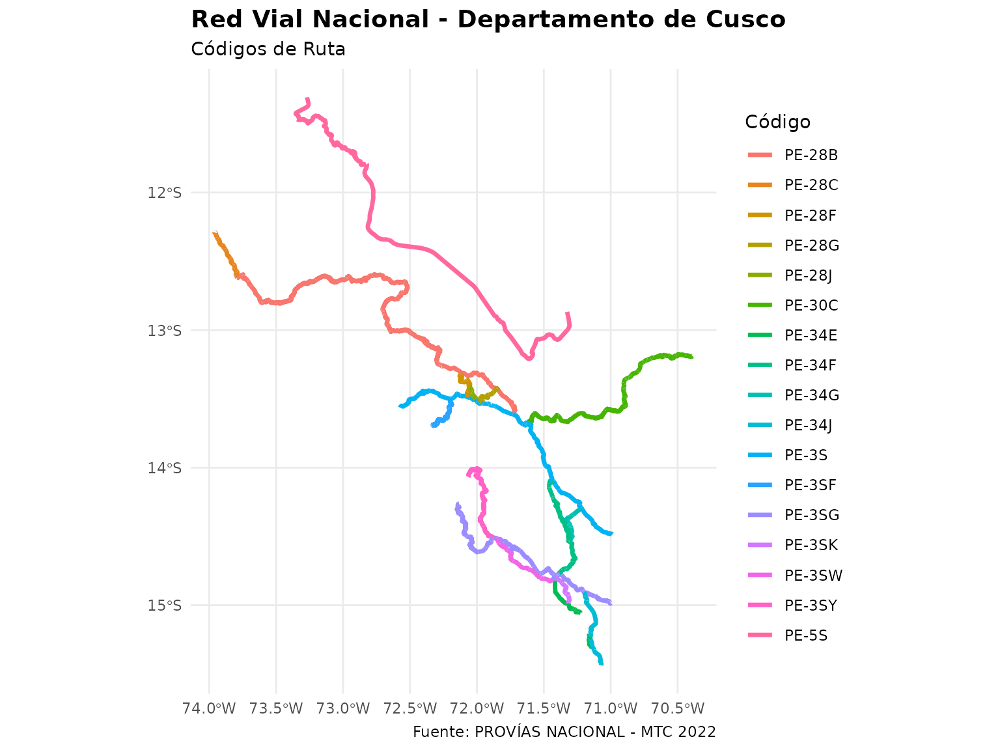
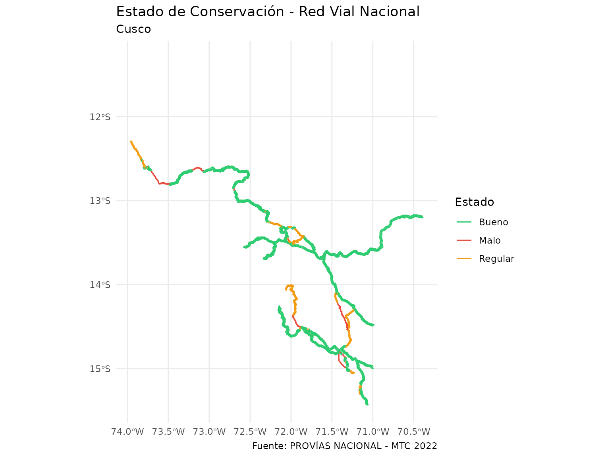
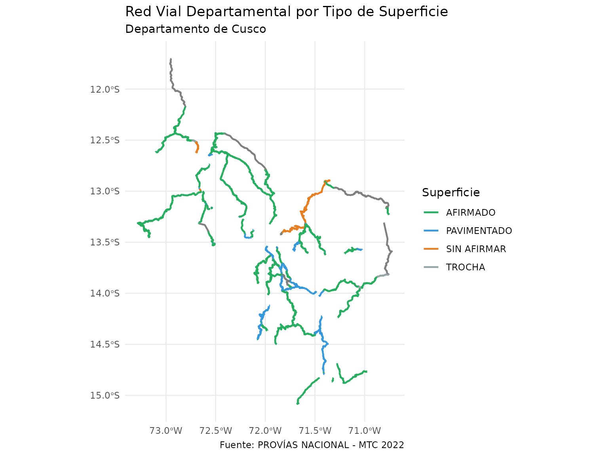
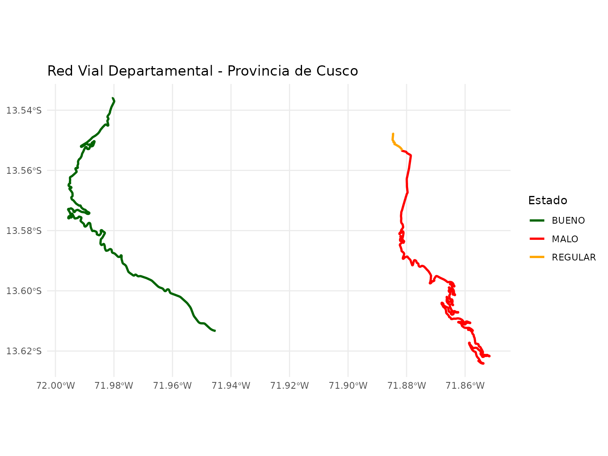
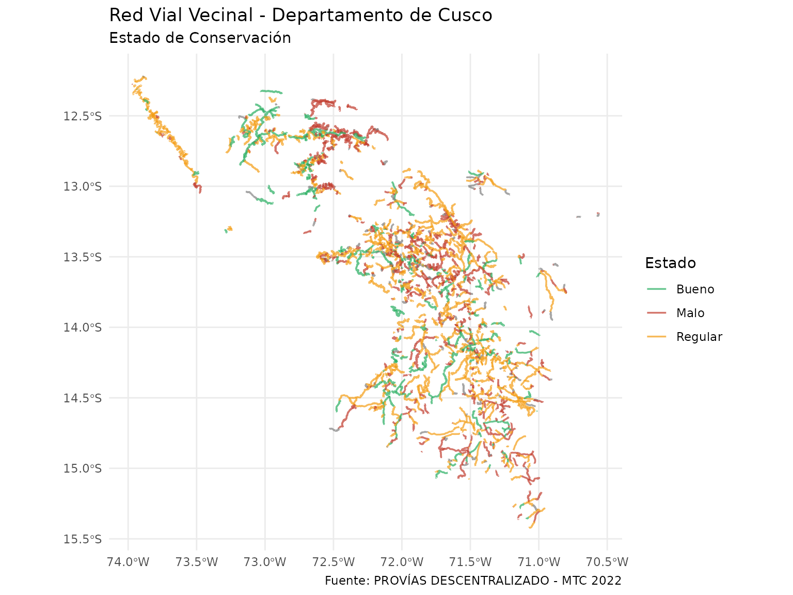
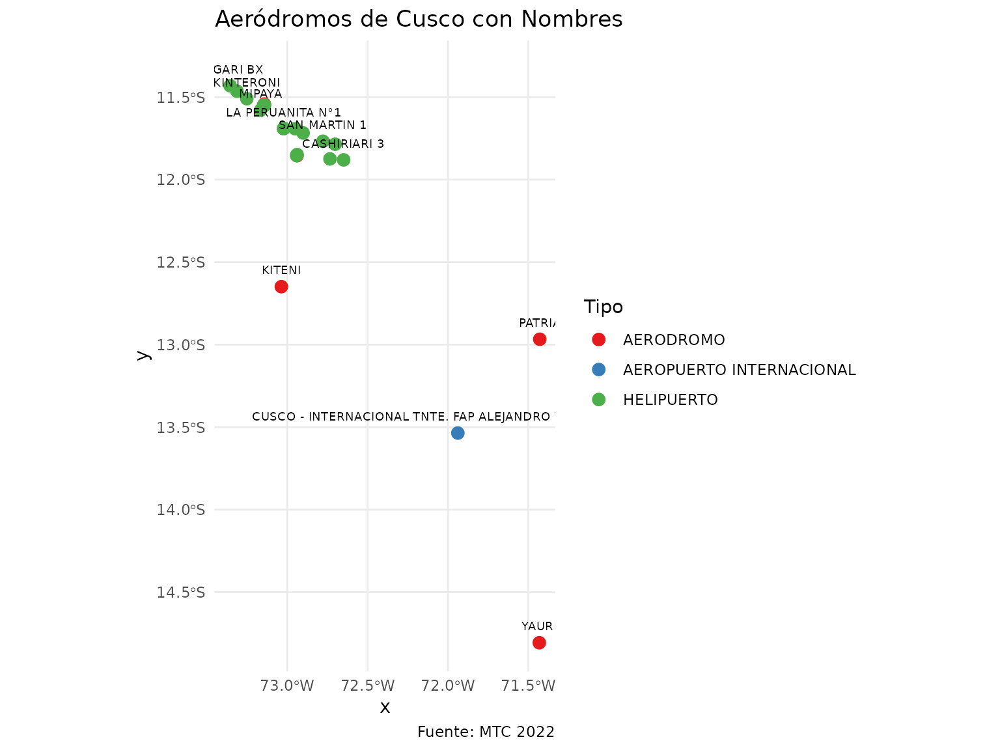
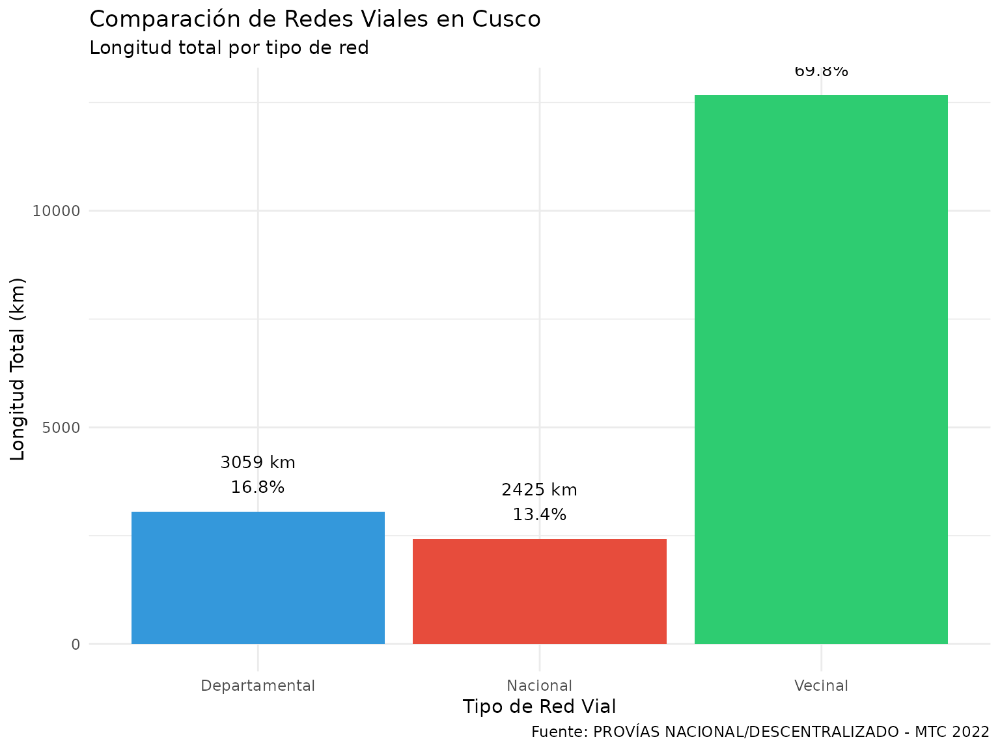
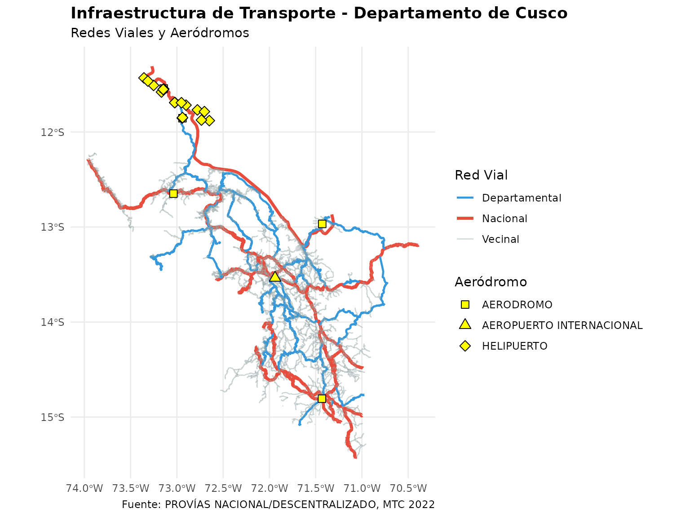
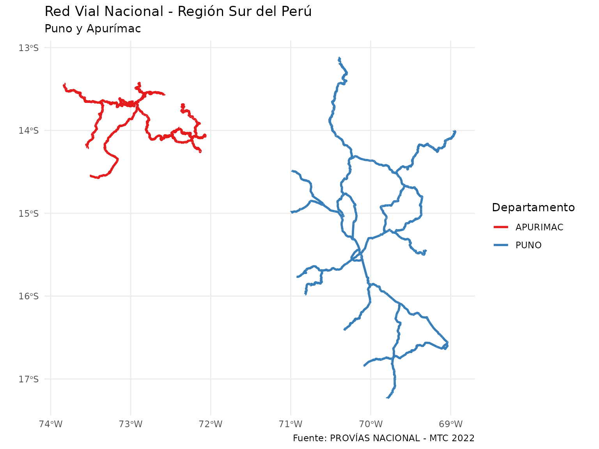
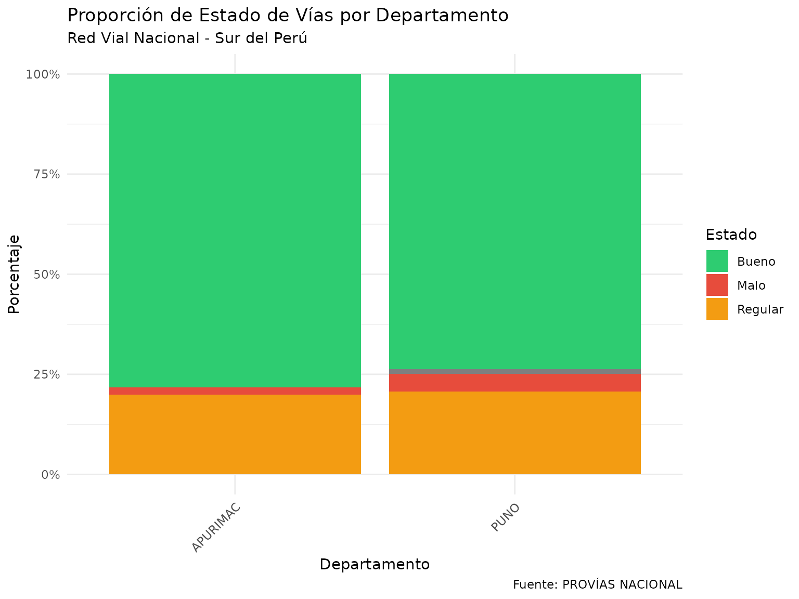

Infraestructura de Transporte en el Perú
Source:vignettes/infraestructura_transporte.Rmd
infraestructura_transporte.RmdIntroducción
El paquete rsdot proporciona acceso a datos de
infraestructura de transporte del Perú a través del Visor SDOT. Esta
viñeta muestra cómo acceder y analizar información sobre:
- Red Vial Nacional: Carreteras principales que conectan el país
- Red Vial Departamental: Vías que conectan provincias dentro de cada departamento
- Red Vial Vecinal: Carreteras rurales que conectan centros poblados menores
- Aeródromos: Aeropuertos, aeródromos y helipuertos
Todos los datos provienen de PROVÍAS NACIONAL y PROVÍAS DESCENTRALIZADO, actualizados a julio 2022 según el Clasificador de Rutas (DS 011-2016-MTC).
Red Vial Nacional
La Red Vial Nacional comprende las principales carreteras que conectan el territorio peruano, incluyendo las longitudinales de la costa, sierra y selva, así como las carreteras transversales.
Carga de datos
# Cargar red vial nacional de Cusco
vias_nac_cusco <- get_red_vial_nacional(departamento = "CUSCO")
# Ver estructura de los datos
head(vias_nac_cusco)
#> Simple feature collection with 6 features and 17 fields
#> Geometry type: MULTILINESTRING
#> Dimension: XY
#> Bounding box: xmin: -73.38161 ymin: -13.53206 xmax: -71.96576 ymax: -11.30783
#> Geodetic CRS: WGS 84
#> # A tibble: 6 × 18
#> inicio fin trayectori nrocarril ejeclas iddpto nombdep codruta jerarq
#> <dbl> <dbl> <chr> <int> <chr> <chr> <chr> <chr> <chr>
#> 1 317. 340. Pte. Reither (PE… 0 Longit… 08 CUSCO PE-5S RN
#> 2 340. 455. Pte. Reither (PE… 0 Longit… 08 CUSCO PE-5S RN
#> 3 974. 974. Repartición La O… 4 Longit… 08 CUSCO PE-3S RN
#> 4 19.8 19.8 Emp. PE-3S (Poro… 2 Ramal 08 CUSCO PE-28F RN
#> 5 269. 305. Emp.PE-3S (Pacay… 1 Varian… 08 CUSCO PE-28B RN
#> 6 321. 331. Emp.PE-3S (Pacay… 1 Varian… 08 CUSCO PE-28B RN
#> # ℹ 9 more variables: superfic <int>, longitud <dbl>, codconces <chr>,
#> # codclog <chr>, superfic_l <chr>, codclog_l <chr>, estado <int>,
#> # estado_l <chr>, geom <MULTILINESTRING [°]>Análisis básico
# Estadísticas generales
vias_nac_cusco |>
st_drop_geometry() |>
summarise(
longitud_total_km = sum(longitud, na.rm = TRUE),
n_rutas = n_distinct(codruta),
n_tramos = n(),
km_pavimentado = sum(longitud[superfic_l == "Pavimentado"], na.rm = TRUE),
pct_pavimentado = (km_pavimentado / longitud_total_km) * 100
)
#> # A tibble: 1 × 5
#> longitud_total_km n_rutas n_tramos km_pavimentado pct_pavimentado
#> <dbl> <int> <int> <dbl> <dbl>
#> 1 2425. 17 432 1080. 44.5
# Análisis por eje de clasificación
vias_nac_cusco |>
st_drop_geometry() |>
group_by(ejeclas) |>
summarise(
longitud_km = sum(longitud, na.rm = TRUE),
.groups = "drop"
) |>
arrange(desc(longitud_km))
#> # A tibble: 5 × 2
#> ejeclas longitud_km
#> <chr> <dbl>
#> 1 Ramal 779.
#> 2 Variante 724.
#> 3 Longitudinal de la Selva 399.
#> 4 Longitudinal de la Sierra 280.
#> 5 Transversal 243.Visualización
# Mapa de red vial nacional por código de ruta
ggplot(vias_nac_cusco) +
geom_sf(aes(color = codruta), linewidth = 1.2) +
labs(
title = "Red Vial Nacional - Departamento de Cusco",
subtitle = "Códigos de Ruta",
color = "Código",
caption = "Fuente: PROVÍAS NACIONAL - MTC 2022"
) +
theme_minimal() +
theme(
legend.position = "right",
plot.title = element_text(face = "bold", size = 14),
plot.subtitle = element_text(size = 11)
)
# Mapa por estado de conservación
ggplot(vias_nac_cusco) +
geom_sf(aes(color = estado_l, linewidth = estado_l)) +
scale_color_manual(
values = c(
"Bueno" = "#2ecc71",
"Regular" = "#f39c12",
"Malo" = "#e74c3c"
),
name = "Estado"
) +
scale_linewidth_manual(
values = c("Bueno" = 1.2, "Regular" = 0.9, "Malo" = 0.6),
guide = "none"
) +
labs(
title = "Estado de Conservación - Red Vial Nacional",
subtitle = "Cusco",
caption = "Fuente: PROVÍAS NACIONAL - MTC 2022"
) +
theme_minimal()
Red Vial Departamental
Las carreteras departamentales conectan las capitales provinciales y centros poblados importantes dentro de cada departamento.
Carga y análisis
# Cargar red vial departamental
vias_dep_cusco <- get_red_vial_departamental(departamento = "CUSCO")
# Análisis por provincia
analisis_prov <- vias_dep_cusco |>
st_drop_geometry() |>
group_by(nombprov) |>
summarise(
longitud_total = sum(longitud, na.rm = TRUE),
n_rutas = n_distinct(codruta),
km_pavimentado = sum(longitud[superfic_l == "PAVIMENTADO"], na.rm = TRUE),
pct_pavimentado = (km_pavimentado / longitud_total) * 100,
.groups = "drop"
) |>
arrange(desc(longitud_total))
print(analisis_prov)
#> # A tibble: 13 × 5
#> nombprov longitud_total n_rutas km_pavimentado pct_pavimentado
#> <chr> <dbl> <int> <dbl> <dbl>
#> 1 LA CONVENCION 808. 10 9.53 1.18
#> 2 PARURO 436. 7 105. 24.0
#> 3 PAUCARTAMBO 379. 5 25.7 6.77
#> 4 CALCA 312. 3 0 0
#> 5 QUISPICANCHI 210. 5 9.94 4.72
#> 6 CHUMBIVILCAS 208. 4 83.9 40.4
#> 7 CANCHIS 169. 2 8.59 5.09
#> 8 ESPINAR 143. 5 25.8 18.0
#> 9 ACOMAYO 139. 3 85.1 61.1
#> 10 CANAS 101. 2 90.8 90.1
#> 11 ANTA 68.0 3 12.6 18.5
#> 12 URUBAMBA 48.2 4 2.15 4.47
#> 13 CUSCO 37.5 2 17.9 47.8Visualización por tipo de superficie
# Mapa por tipo de superficie
ggplot(vias_dep_cusco) +
geom_sf(aes(color = superfic_l), linewidth = 0.8) +
scale_color_manual(
values = c(
"PAVIMENTADO" = "#3498db",
"AFIRMADO" = "#27ae60",
"SIN AFIRMAR" = "#e67e22",
"TROCHA" = "#95a5a6"
),
name = "Superficie"
) +
labs(
title = "Red Vial Departamental por Tipo de Superficie",
subtitle = "Departamento de Cusco",
caption = "Fuente: PROVÍAS NACIONAL - MTC 2022"
) +
theme_minimal()
Filtrado por provincia
# Cargar solo una provincia específica
vias_prov_cusco <- get_red_vial_departamental(
departamento = "CUSCO",
provincia = "CUSCO"
)
# Visualizar
ggplot(vias_prov_cusco) +
geom_sf(aes(color = estado_l), linewidth = 1) +
scale_color_manual(
values = c("BUENO" = "darkgreen", "REGULAR" = "orange", "MALO" = "red")
) +
labs(
title = "Red Vial Departamental - Provincia de Cusco",
color = "Estado"
) +
theme_minimal()
Red Vial Vecinal
La Red Vial Vecinal o Rural conecta centros poblados menores, caseríos y zonas de producción. Es administrada por los gobiernos locales.
Características de la red vecinal
# Cargar red vial vecinal
vias_vec_cusco <- get_red_vial_vecinal(departamento = "CUSCO")
# Análisis de superficie
vias_vec_cusco |>
st_drop_geometry() |>
group_by(superfic_l) |>
summarise(
longitud_km = sum(longitud, na.rm = TRUE),
n_tramos = n(),
porcentaje = (longitud_km / sum(vias_vec_cusco$longitud, na.rm = TRUE)) * 100,
.groups = "drop"
) |>
arrange(desc(longitud_km))
#> # A tibble: 6 × 4
#> superfic_l longitud_km n_tramos porcentaje
#> <chr> <dbl> <int> <dbl>
#> 1 Trocha 6631. 1216 52.3
#> 2 Afirmado 3589. 513 28.3
#> 3 Sin afirmar 2111. 383 16.7
#> 4 Pavimentado 304. 198 2.40
#> 5 Asfaltado económico 24.1 3 0.191
#> 6 Proyectado 12.4 2 0.0979
# Análisis de estado
vias_vec_cusco |>
st_drop_geometry() |>
group_by(estado_l) |>
summarise(
longitud_km = sum(longitud, na.rm = TRUE),
porcentaje = (longitud_km / sum(vias_vec_cusco$longitud, na.rm = TRUE)) * 100,
.groups = "drop"
)
#> # A tibble: 4 × 3
#> estado_l longitud_km porcentaje
#> <chr> <dbl> <dbl>
#> 1 Bueno 2369. 18.7
#> 2 Información no disponible 582. 4.59
#> 3 Malo 3645. 28.8
#> 4 Regular 6077. 48.0Identificación de prioridades
# Identificar vías en mal estado por provincia
vias_mal_estado <- vias_vec_cusco |>
filter(estado_l == "Malo") |>
st_drop_geometry() |>
group_by(nombprov) |>
summarise(
km_mal_estado = sum(longitud, na.rm = TRUE),
n_vias = n(),
.groups = "drop"
) |>
arrange(desc(km_mal_estado))
print(vias_mal_estado)
#> # A tibble: 13 × 3
#> nombprov km_mal_estado n_vias
#> <chr> <dbl> <int>
#> 1 LA CONVENCION 994. 160
#> 2 QUISPICANCHI 397. 76
#> 3 ESPINAR 390. 62
#> 4 PAUCARTAMBO 358. 50
#> 5 CALCA 304. 71
#> 6 CHUMBIVILCAS 253. 44
#> 7 CANAS 187. 44
#> 8 PARURO 178. 34
#> 9 CUSCO 164. 52
#> 10 ANTA 136. 38
#> 11 ACOMAYO 132. 32
#> 12 CANCHIS 88.9 27
#> 13 URUBAMBA 62.7 20Visualización
# Mapa de red vecinal por estado
ggplot(vias_vec_cusco) +
geom_sf(aes(color = estado_l), linewidth = 0.6, alpha = 0.7) +
scale_color_manual(
values = c(
"Bueno" = "#27ae60",
"Regular" = "#f39c12",
"Malo" = "#c0392b"
),
name = "Estado"
) +
labs(
title = "Red Vial Vecinal - Departamento de Cusco",
subtitle = "Estado de Conservación",
caption = "Fuente: PROVÍAS DESCENTRALIZADO - MTC 2022"
) +
theme_minimal()
Aeródromos
Los datos de aeródromos incluyen aeropuertos, aeródromos y helipuertos en todo el Perú.
Carga y exploración
# Cargar aeródromos de Cusco
aero_cusco <- get_aerodromos(departamento = "CUSCO")
# Ver tipos de instalaciones
table(aero_cusco$tipo)
#>
#> AERODROMO AEROPUERTO INTERNACIONAL HELIPUERTO
#> 5 1 20
# Análisis por tipo y titularidad
aero_cusco |>
st_drop_geometry() |>
group_by(tipo, titular) |>
summarise(n = n(), .groups = "drop") |>
arrange(tipo, desc(n))
#> # A tibble: 4 × 3
#> tipo titular n
#> <chr> <chr> <int>
#> 1 AERODROMO PRIVADA 3
#> 2 AERODROMO PUBLICA 2
#> 3 AEROPUERTO INTERNACIONAL PUBLICA 1
#> 4 HELIPUERTO PRIVADA 20Visualización
# Mapa de aeródromos
ggplot(aero_cusco) +
geom_sf(aes(color = tipo, shape = tipo), size = 4) +
scale_color_manual(
values = c(
"AEROPUERTO INTERNACIONAL" = "#e74c3c",
"AERODROMO" = "#3498db",
"HELIPUERTO" = "#2ecc71"
),
name = "Tipo"
) +
scale_shape_manual(
values = c(
"AEROPUERTO INTERNACIONAL" = 17,
"AERODROMO" = 16,
"HELIPUERTO" = 15
),
name = "Tipo"
) +
labs(
title = "Aeródromos del Departamento de Cusco",
subtitle = "Actualizado 2022 - MTC",
caption = "Fuente: MTC | Visor SDOT"
) +
theme_minimal()
# Mapa con etiquetas
ggplot(aero_cusco) +
geom_sf(aes(color = tipo), size = 3) +
geom_sf_text(
aes(label = nombre),
size = 2.5,
nudge_y = 0.1,
check_overlap = TRUE
) +
scale_color_brewer(palette = "Set1", name = "Tipo") +
labs(
title = "Aeródromos de Cusco con Nombres",
caption = "Fuente: MTC 2022"
) +
theme_minimal()
Análisis Integrado
Comparación entre redes viales
# Cargar las tres redes
vias_nacional <- get_red_vial_nacional(departamento = "CUSCO")
vias_departamental <- get_red_vial_departamental(departamento = "CUSCO")
vias_vecinal <- get_red_vial_vecinal(departamento = "CUSCO")
# Crear resumen comparativo
comparacion <- data.frame(
Red = c("Nacional", "Departamental", "Vecinal"),
Longitud_km = c(
sum(vias_nacional$longitud, na.rm = TRUE),
sum(vias_departamental$longitud, na.rm = TRUE),
sum(vias_vecinal$longitud, na.rm = TRUE)
),
N_tramos = c(
nrow(vias_nacional),
nrow(vias_departamental),
nrow(vias_vecinal)
)
)
comparacion <- comparacion |>
mutate(
Porcentaje = (Longitud_km / sum(Longitud_km)) * 100,
Km_promedio_tramo = Longitud_km / N_tramos
)
print(comparacion)
#> Red Longitud_km N_tramos Porcentaje Km_promedio_tramo
#> 1 Nacional 2424.775 432 13.35542 5.612905
#> 2 Departamental 3058.914 363 16.84819 8.426760
#> 3 Vecinal 12672.055 2315 69.79640 5.473890Visualización comparativa
# Gráfico de barras comparativo
ggplot(comparacion, aes(x = Red, y = Longitud_km, fill = Red)) +
geom_col() +
geom_text(
aes(label = paste0(round(Longitud_km, 0), " km\n",
round(Porcentaje, 1), "%")),
vjust = -0.5,
size = 3.5
) +
scale_fill_manual(
values = c(
"Nacional" = "#e74c3c",
"Departamental" = "#3498db",
"Vecinal" = "#2ecc71"
)
) +
labs(
title = "Comparación de Redes Viales en Cusco",
subtitle = "Longitud total por tipo de red",
x = "Tipo de Red Vial",
y = "Longitud Total (km)",
caption = "Fuente: PROVÍAS NACIONAL/DESCENTRALIZADO - MTC 2022"
) +
theme_minimal() +
theme(legend.position = "none")
Mapa integrado de infraestructura
# Mapa con todas las redes y aeródromos
ggplot() +
# Red Nacional (base)
geom_sf(
data = vias_nacional,
aes(color = "Nacional"),
linewidth = 1.2
) +
# Red Departamental
geom_sf(
data = vias_departamental,
aes(color = "Departamental"),
linewidth = 0.8
) +
# Red Vecinal
geom_sf(
data = vias_vecinal,
aes(color = "Vecinal"),
linewidth = 0.4,
alpha = 0.5
) +
# Aeródromos
geom_sf(
data = aero_cusco,
aes(shape = tipo),
size = 3,
color = "black",
fill = "yellow"
) +
scale_color_manual(
values = c(
"Nacional" = "#e74c3c",
"Departamental" = "#3498db",
"Vecinal" = "#95a5a6"
),
name = "Red Vial"
) +
scale_shape_manual(
values = c(
"AEROPUERTO INTERNACIONAL" = 24,
"AERODROMO" = 22,
"HELIPUERTO" = 23
),
name = "Aeródromo"
) +
labs(
title = "Infraestructura de Transporte - Departamento de Cusco",
subtitle = "Redes Viales y Aeródromos",
caption = "Fuente: PROVÍAS NACIONAL/DESCENTRALIZADO, MTC 2022"
) +
theme_minimal() +
theme(
legend.position = "right",
plot.title = element_text(face = "bold")
)
Análisis Multidepartamental
Comparación entre departamentos del sur
# Cargar red nacional de varios departamentos
vias_sur <- get_red_vial_nacional(
departamento = c("PUNO", "APURIMAC")
)
# Análisis por departamento
resumen_sur <- vias_sur |>
st_drop_geometry() |>
group_by(nombdep) |>
summarise(
longitud_total = sum(longitud, na.rm = TRUE),
n_rutas = n_distinct(codruta),
km_pavimentado = sum(longitud[superfic_l == "Pavimentado"], na.rm = TRUE),
pct_pavimentado = (km_pavimentado / longitud_total) * 100,
km_buen_estado = sum(longitud[estado_l == "Bueno"], na.rm = TRUE),
pct_buen_estado = (km_buen_estado / longitud_total) * 100,
.groups = "drop"
) |>
arrange(desc(longitud_total))
print(resumen_sur)
#> # A tibble: 2 × 7
#> nombdep longitud_total n_rutas km_pavimentado pct_pavimentado km_buen_estado
#> <chr> <dbl> <int> <dbl> <dbl> <dbl>
#> 1 PUNO 2042. 17 1307. 64.0 1506.
#> 2 APURIMAC 1284. 9 556. 43.3 1004.
#> # ℹ 1 more variable: pct_buen_estado <dbl>Visualización regional
# Mapa regional
ggplot(vias_sur) +
geom_sf(aes(color = nombdep), linewidth = 1) +
scale_color_brewer(palette = "Set1", name = "Departamento") +
labs(
title = "Red Vial Nacional - Región Sur del Perú",
subtitle = "Puno y Apurímac",
caption = "Fuente: PROVÍAS NACIONAL - MTC 2022"
) +
theme_minimal()
# Gráfico comparativo de estado
vias_sur |>
st_drop_geometry() |>
group_by(nombdep, estado_l) |>
summarise(km = sum(longitud, na.rm = TRUE), .groups = "drop") |>
ggplot(aes(x = nombdep, y = km, fill = estado_l)) +
geom_col(position = "fill") +
scale_fill_manual(
values = c("Bueno" = "#2ecc71", "Regular" = "#f39c12", "Malo" = "#e74c3c"),
name = "Estado"
) +
scale_y_continuous(labels = scales::percent) +
labs(
title = "Proporción de Estado de Vías por Departamento",
subtitle = "Red Vial Nacional - Sur del Perú",
x = "Departamento",
y = "Porcentaje",
caption = "Fuente: PROVÍAS NACIONAL"
) +
theme_minimal() +
theme(axis.text.x = element_text(angle = 45, hjust = 1))
Análisis de Accesibilidad
Conectividad aérea
# Cargar aeródromos de múltiples departamentos
aero_sur <- get_aerodromos(
departamento = c("PUNO", "AREQUIPA", "APURIMAC")
)
# Resumen por departamento
aero_sur |>
st_drop_geometry() |>
group_by(nombdep, tipo) |>
summarise(n = n(), .groups = "drop") |>
tidyr::pivot_wider(names_from = tipo, values_from = n, values_fill = 0)
#> # A tibble: 3 × 5
#> nombdep AEROPUERTO HELIPUERTO AERODROMO `AEROPUERTO INTERNACIONAL`
#> <chr> <int> <int> <int> <int>
#> 1 APURIMAC 1 2 0 0
#> 2 AREQUIPA 0 1 3 1
#> 3 PUNO 0 0 1 1
# Aeródromos operativos públicos
aero_publicos <- aero_sur |>
filter(titular == "PUBLICA", estado == "OPERATIVO")
nrow(aero_publicos)
#> [1] 2Casos de Uso Prácticos
Caso 1: Planificación de rutas
# Identificar la ruta principal entre Cusco y Lima
# PE-3S es la carretera principal
ruta_principal <- vias_nacional |>
filter(codruta == "PE-3S")
# Análisis de la ruta
ruta_principal |>
st_drop_geometry() |>
summarise(
longitud_total = sum(longitud, na.rm = TRUE),
km_pavimentado = sum(longitud[superfic_l == "Pavimentado"], na.rm = TRUE),
km_afirmado = sum(longitud[superfic_l == "Afirmado"], na.rm = TRUE)
)
#> # A tibble: 1 × 3
#> longitud_total km_pavimentado km_afirmado
#> <dbl> <dbl> <dbl>
#> 1 280. 280. 0Caso 2: Evaluación de necesidades de mantenimiento
# Identificar tramos que requieren intervención urgente
# (mal estado y alta importancia)
vias_prioritarias <- vias_departamental |>
filter(
estado_l == "MALO",
superfic_l %in% c("PAVIMENTADO", "AFIRMADO")
) |>
arrange(desc(longitud))
# Resumen por provincia
vias_prioritarias |>
st_drop_geometry() |>
group_by(nombprov) |>
summarise(
km_requiere_atencion = sum(longitud, na.rm = TRUE),
n_tramos = n(),
.groups = "drop"
) |>
arrange(desc(km_requiere_atencion))
#> # A tibble: 11 × 3
#> nombprov km_requiere_atencion n_tramos
#> <chr> <dbl> <int>
#> 1 LA CONVENCION 288. 39
#> 2 PARURO 200. 16
#> 3 CHUMBIVILCAS 130. 8
#> 4 CANCHIS 122. 4
#> 5 PAUCARTAMBO 83.7 6
#> 6 CANAS 53.7 2
#> 7 ANTA 38.0 6
#> 8 ESPINAR 37.3 3
#> 9 QUISPICANCHI 30.4 4
#> 10 CUSCO 19.6 1
#> 11 URUBAMBA 7.24 1Caso 3: Análisis de inversión rural
# Analizar el estado de la red vecinal
# para priorizar inversiones
analisis_rural <- vias_vecinal |>
st_drop_geometry() |>
group_by(nombprov) |>
summarise(
km_total = sum(longitud, na.rm = TRUE),
km_trocha = sum(longitud[superfic_l == "Trocha"], na.rm = TRUE),
pct_trocha = (km_trocha / km_total) * 100,
km_malo = sum(longitud[estado_l == "Malo"], na.rm = TRUE),
pct_malo = (km_malo / km_total) * 100,
.groups = "drop"
) |>
arrange(desc(pct_trocha))
# Provincias con mayor necesidad de mejoramiento
print(head(analisis_rural, 10))
#> # A tibble: 10 × 6
#> nombprov km_total km_trocha pct_trocha km_malo pct_malo
#> <chr> <dbl> <dbl> <dbl> <dbl> <dbl>
#> 1 QUISPICANCHI 1091. 984. 90.2 397. 36.4
#> 2 PAUCARTAMBO 1129. 870. 77.1 358. 31.8
#> 3 ACOMAYO 495. 367. 74.1 132. 26.7
#> 4 ANTA 763. 553. 72.6 136. 17.8
#> 5 CANCHIS 625. 417. 66.8 88.9 14.2
#> 6 CALCA 874. 480. 54.9 304. 34.8
#> 7 LA CONVENCION 2938. 1472. 50.1 994. 33.8
#> 8 PARURO 656. 323. 49.2 178. 27.1
#> 9 CHUMBIVILCAS 1464. 621. 42.4 253. 17.3
#> 10 ESPINAR 992. 269. 27.1 390. 39.3Exportación de Datos
Guardar en formatos estándar
# Exportar a GeoPackage
st_write(
vias_nacional,
"red_vial_nacional_cusco.gpkg",
delete_dsn = TRUE
)
# Exportar a Shapefile
st_write(
aero_cusco,
"aerodromos_cusco.shp",
delete_dsn = TRUE
)
# Exportar datos tabulares a CSV
vias_nacional |>
st_drop_geometry() |>
write.csv("red_nacional_cusco_datos.csv", row.names = FALSE)Recursos Adicionales
Fuentes de datos
- Visor SDOT: https://geosdot.servicios.gob.pe/visor/